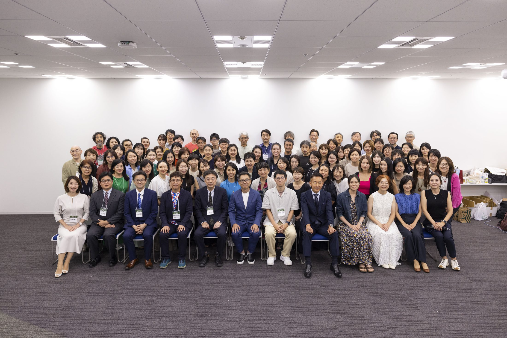
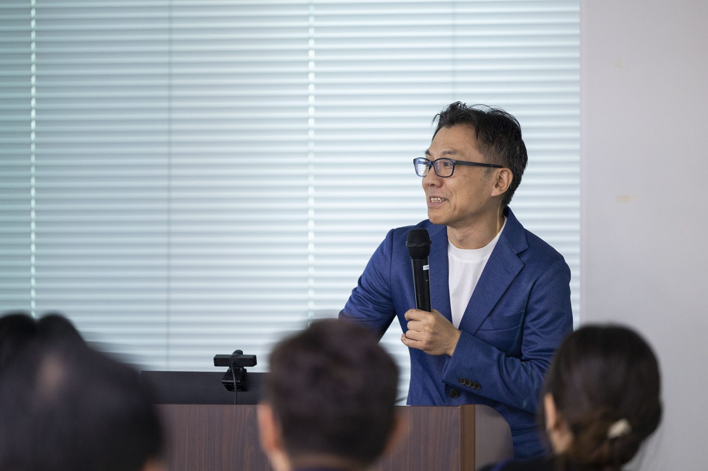
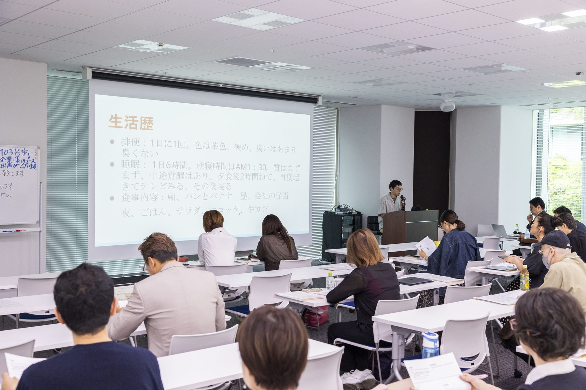

参加者募集
最新の実践知に触れ、会員同士で学びを深めたい方へ。
Concept
2026年度の総会では、臨床分子栄養医学の実践に関わる方々が集まり、 症例、工夫、試行錯誤を共有します。改善症例はもちろん、 改善し損ないの経験も、次の臨床につながる大切な学びとして歓迎します。
最新の実践知に触れ、会員同士で学びを深めたい方へ。
「こうしたら、こう変わった」という経験を共有したい方へ。
研究会の活動にご賛同いただける企業様へ。
Scenes
発表を聞くだけではなく、参加者同士で臨床の悩みや気づきを共有できる場です。 当日のプログラムや参加方法は、決まり次第こちらでご案内します。



For Attendees
臨床分子栄養医学の実践を学びたい方、症例から具体的なアプローチを深めたい方のご参加をお待ちしています。
参加申込方法、参加費、定員などは順次公開予定です。
Call for Speakers
改善症例、改善し損ないの症例、どちらも歓迎します。 医師・歯科医師でない方の発表も、もちろん歓迎しています。 検査所見がなくても大丈夫です。
「こういうアプローチをしたら、こう変わった」という経験を、ぜひ共有してください。
主訴、困っていたこと、生活背景、検査所見があればその内容
食事、生活、サプリメント、除菌、カウンセリングなど
症状、検査、生活、家族関係、気づき、うまくいかなかった点など
Speaker Entry
応募フォームには、発表したい内容を簡単にご記入ください。 完成された症例でなくても、臨床の経過や試行錯誤が伝わる内容であれば歓迎します。
食事、生活、栄養、腸内環境、心理面などへのアプローチによって、 症状や生活に変化が見られたケース。
思うように改善しなかったケース、途中で方針を変えたケース、 そこから得られた学びや課題。
Please Note
発表内容は、栄養療法に関する症例の発表を含むものに限らせていただきます。 ご自分の商品の宣伝、カウンセラーとしての意気込みのみ、自分の世界観を語るのみの発表はご遠慮ください。
Entry Form
改善症例、改善し損ないの症例、検査所見のないケースも歓迎しています。 下記フォームよりお知らせください。
For Sponsors
臨床分子栄養医学研究会の活動にご賛同いただける企業様を募集しています。 会員の学びと臨床実践を支える機会として、ぜひご検討ください。
Information
参加者募集の詳細、協賛企業様向けのご案内、当日のプログラムは準備が整い次第掲載します。